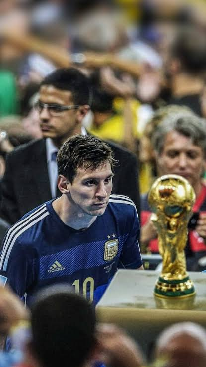

logo

Este é um site sobre informações futebolisticas sobre a carreira do Messi, usuarios podem compartilhar suas opiniões ou adicionar informações sobre ele, o site tambem estara aberto a debates sobre ele, comparando-o com outros jogadores.